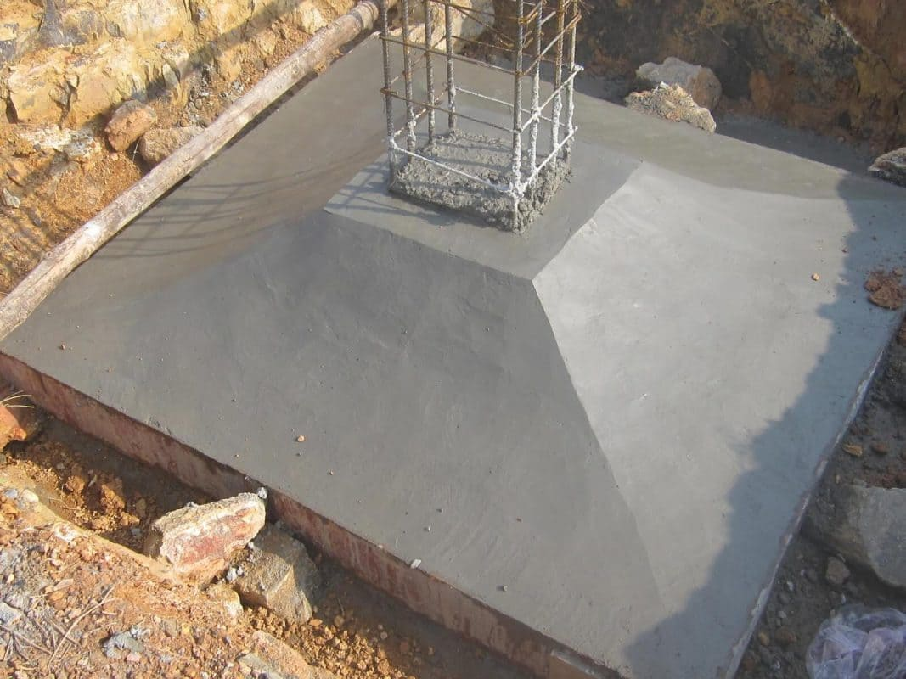
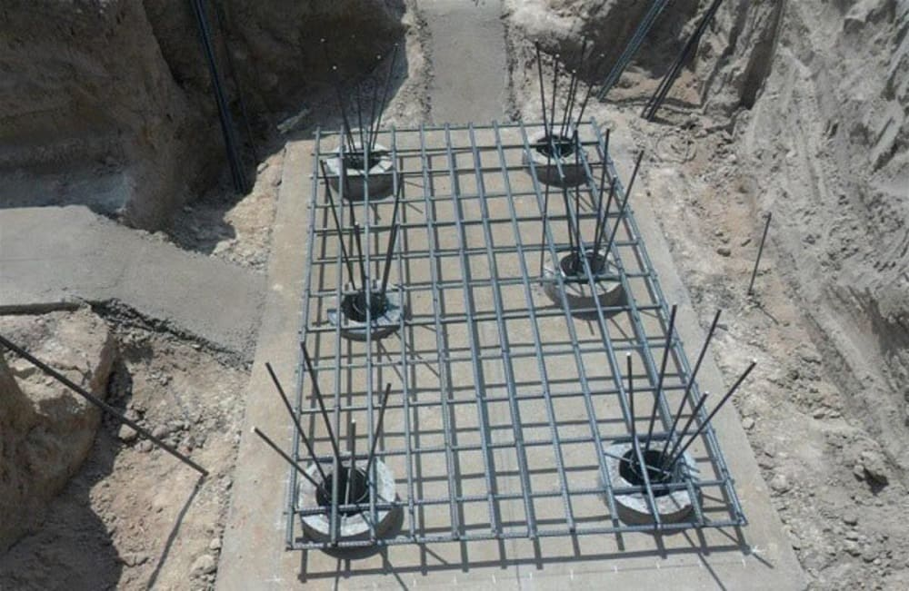

Trong xây dựng, móng cọc là giải pháp nền móng quan trọng giúp công trình tăng khả năng chịu lực và ổn định trên nền đất yếu. Vậy móng cọc là gì và được ứng dụng như thế nào trong thực tế? Hãy cùng AVA Architects khám phá chi tiết trong bài viết dưới đây.
Xem thêm:
- Thủ tục xin giấy phép xây dựng thế nào? Lệ phí bao nhiêu?
- Cách nộp hồ sơ xin giấy phép xây dựng online tại Đà Nẵng
- Quy định PCCC căn hộ 3 tầng, 4 tầng, 5 tầng, 6 tầng, 7 tầng
Móng cọc là gì?
Móng cọc là loại móng được thiết kế với các cọc dài hình trụ, thường làm từ bê tông cốt thép hoặc cọc cừ tràm, được đóng hoặc ép sâu xuống nền đất để tăng khả năng chịu lực cho công trình. Hệ móng này có cấu tạo gồm đài cọc và nhóm cọc (hoặc cọc đơn), giúp truyền tải trọng của công trình xuống lớp đất có khả năng chịu lực tốt hơn. Đây là một trong những loại móng được sử dụng phổ biến trong thiết kế và thi công xây dựng.

Móng cọc là nền móng sử dụng các cọc đóng sâu xuống đất để chịu lực cho công trình (C: AVA Architects)
Trong thực tế, móng cọc thường được áp dụng cho các công trình có tải trọng lớn hoặc xây dựng trên nền đất yếu. Đặc biệt tại những khu vực dễ xảy ra sụt lún, sạt lở hoặc nền đất kém ổn định, việc sử dụng móng cọc sẽ giúp tăng độ vững chắc, đảm bảo an toàn và tuổi thọ cho công trình.
Phân loại móng cọc
Hiện nay, móng cọc trong xây dựng thường được chia thành hai loại chính dựa trên vị trí và đặc điểm kết cấu của đài cọc.
- Móng đài thấp: Đây là loại móng có phần đài cọc được bố trí nằm dưới mặt đất. Khi thi công, lực ngang tác động lên móng sẽ được cân bằng với áp lực bị động của đất tại độ sâu đặt móng. Trong kết cấu này, các cọc chủ yếu chịu lực nén, còn tải trọng uốn hầu như không đáng kể.
- Móng đài cao: Khác với móng đài thấp, loại móng này có đài cọc nằm cao hơn mặt đất, với chiều sâu chôn móng nhỏ hơn chiều cao của cọc. Móng đài cao phải chịu đồng thời tải trọng nén và tải trọng uốn, do đó toàn bộ lực ngang và lực đứng của công trình sẽ được truyền trực tiếp xuống hệ cọc để chịu tải.
Các vật liệu làm móng cọc
| Chất liệu | Đặc điểm |
| Cọc ma sát | • Tải trọng của công trình được truyền xuống nền đất thông qua lực ma sát giữa bề mặt cọc và lớp đất xung quanh.
• Cọc được đóng hoặc ép đến độ sâu nhất định để lực ma sát dọc thân cọc đủ khả năng chịu tải từ phía trên. |
| Cọc gỗ | • Các loại cọc gỗ thường dùng gồm cọc tràm, cọc bạch đàn.
• Chi phí thi công thấp, dễ triển khai và phù hợp với các công trình nhỏ. • Thường được sử dụng cho nền đất bùn, đất yếu hoặc khu vực có nguy cơ sạt lở cao. |
| Cọc thép | • Có thể áp dụng cho cả công trình tạm thời và công trình lâu dài.
• Tiết diện cọc nhỏ nhưng cường độ chịu lực cao, giúp cọc dễ dàng đóng sâu vào các lớp đất chắc. |
| Cọc bê tông | • Cọc được chế tạo từ khung thép kết hợp với lớp bê tông bao bọc bên ngoài.
• Chiều dài cọc thường dao động khoảng 4-6m hoặc hơn tùy yêu cầu thiết kế. |
| Cọc composite | • Được tạo thành từ sự kết hợp của nhiều loại vật liệu khác nhau.
• Có thể kết hợp phần cọc gỗ ở phía trên mực nước ngầm để hạn chế ăn mòn, còn phần cọc thép hoặc bê tông đặt dưới mực nước ngầm nhằm tăng độ bền và khả năng chịu lực. |
| Cọc điều khiển | • Khi cọc được đóng xuống đất, khối đất xung quanh sẽ dịch chuyển theo phương thẳng đứng cùng với quá trình hạ cọc. |
| Cọc khoan | • Cọc được thi công bằng cách khoan tạo lỗ trước trong nền đất rồi mới đặt cọc vào.
• Sau đó tiến hành đổ bê tông trực tiếp trong lỗ khoan, tạo thành cọc cố định tại vị trí thi công. |
Cấu tạo của móng cọc
Móng cọc được cấu tạo từ hai bộ phận chính là cọc và đài cọc, mỗi bộ phận đảm nhiệm một vai trò riêng trong việc đảm bảo độ ổn định cho công trình.
- Cọc: Là cấu kiện có chiều dài lớn hơn nhiều so với kích thước tiết diện ngang, được đóng hoặc thi công trực tiếp xuống nền đất. Nhiệm vụ của cọc là truyền tải trọng của công trình xuống lớp đất có khả năng chịu lực tốt hơn, giúp hạn chế tình trạng nghiêng lệch hoặc sụt lún.
- Đài cọc: Là bộ phận nằm phía trên, có chức năng liên kết các cọc lại thành một hệ thống thống nhất. Đồng thời, đài cọc giúp phân bố đều tải trọng của công trình xuống các cọc, từ đó tăng độ ổn định và độ bền vững cho công trình.

Móng cọc gồm hai bộ phận chính là cọc và đài cọc (C: Internet)
Xem thêm:
- Có nên xây tường gạch 2 lớp chống nóng không?
- Nên chọn bê tông tươi và bê tông tự trộn
- Quy trình đổ sàn bê tông đúng kỹ thuật, an toàn
Thiết kế móng cọc như thế nào?
Trước khi tiến hành thi công bất kỳ công trình nào, việc lập bản thiết kế đạt tiêu chuẩn kỹ thuật là điều bắt buộc. Đối với móng cọc, các thông số và yêu cầu kỹ thuật cũng cần được tính toán chính xác để đảm bảo nền móng vững chắc và an toàn cho công trình.
Tiêu chuẩn thiết kế
Việc lựa chọn loại cọc cần dựa trên đặc điểm địa hình và điều kiện nền đất tại khu vực thi công để đảm bảo phù hợp với yêu cầu của công trình. Cọc sử dụng phải đáp ứng tốt các tiêu chí về kết cấu, khả năng chịu tải và hạn chế độ lún trong quá trình sử dụng.
Bên cạnh đó, cần xem xét kỹ kết cấu tổng thể của công trình, bao gồm mối liên kết giữa các tầng, độ cứng của kết cấu và tải trọng tác động lên móng. Khi thiết kế móng cọc, nên tiến hành phân tích kinh tế – kỹ thuật một cách toàn diện, so sánh nhiều phương án khác nhau. Không nên chỉ tập trung vào khả năng chịu lực hoặc chi phí của cọc mà bỏ qua hiệu quả kinh tế lâu dài và độ bền vững của công trình.
Thiết kế móng cọc đài thấp
Móng cọc đài thấp là loại móng có phần đài cọc được bố trí nằm dưới mặt đất, vì vậy khi thiết kế và thi công cần thực hiện các bước tính toán kỹ thuật nhằm đảm bảo độ ổn định cho công trình.
Trước hết cần xác định kích thước cọc và kích thước đài cọc phù hợp với yêu cầu của công trình. Tiếp theo là tính toán sức chịu tải của cọc dựa trên kích thước đã lựa chọn, từ đó ước tính số lượng cọc cần sử dụng và bố trí cọc hợp lý trong hệ móng.

Móng cọc đài thấp là loại móng có đài cọc nằm dưới mặt đất và chủ yếu chịu lực nén từ công trình (C: Internet)
Ngoài ra, quá trình thiết kế móng cọc đài thấp cần được kiểm tra và tính toán dựa trên một số yếu tố quan trọng như: sức chịu tải của lớp đất tại mũi cọc, khả năng độ lún và chuyển vị ngang của móng, cũng như khả năng chịu lực của cọc trong quá trình vận chuyển và lắp dựng. Những yếu tố này giúp đảm bảo hệ móng hoạt động ổn định và an toàn trong suốt quá trình sử dụng công trình.
Thiết kế móng cọc nhà dân
Móng cọc nhà dân thường được áp dụng cho các công trình nhà ở thấp tầng hoặc những công trình xây dựng trong khu vực nhà kẹp khe tại đô thị. Đối với nền đất yếu, hệ móng cọc bê tông bố trí theo dạng hình chữ nhật sẽ giúp tăng độ ổn định và hạn chế tình trạng va chạm, nứt vỡ giữa các công trình liền kề.
Hiện nay, trong thi công nhà ở dân dụng, hai loại cọc bê tông phổ biến thường được sử dụng gồm:
- Cọc bê tông ly tâm tròn: Loại cọc này có dạng hình tròn với các đường kính phổ biến như D300, D400, D500. Tùy theo tiêu chuẩn sản xuất, cọc thường được phân thành hai loại chính là PC (#600) và PHC (#800) với khả năng chịu lực cao.
- Cọc bê tông cốt thép vuông: Đây là loại cọc có tiết diện hình vuông, thường được sản xuất với các kích thước như 200×200, 250×250, 300×300, 350×350, 400×400…, phù hợp với nhiều loại công trình nhà ở và điều kiện nền đất khác nhau.
Thiết kế móng cọc cừ tràm
Móng cừ tràm là giải pháp nền móng được sử dụng phổ biến tại khu vực miền Nam, đặc biệt trong các công trình xây dựng trên nền đất yếu và diện tích nhỏ. Cọc cừ tràm thường có chiều dài dao động khoảng 3-6m, được đóng xuống đất với mật độ trung bình khoảng 25 cọc/m² để tăng khả năng chịu lực cho nền móng.
Móng cọc cừ tràm là loại móng sử dụng cọc tràm đóng xuống nền đất yếu để tăng độ ổn định cho công trình (C: Internet)
So với cọc bê tông, cọc cừ tràm có chi phí thấp hơn, dễ vận chuyển và thi công nhanh chóng. Nhờ những ưu điểm này, loại móng này thường được áp dụng cho các công trình nhà ở dân dụng quy mô nhỏ và trung bình, dưới 5 tầng.
Xem thêm:
- Dầm là gì? Khái niệm, phân loại và chức năng dầm
- Hồ sơ xin giấy phép xây dựng gồm những gì?
- Cốp pha là gì? Phân loại và vai trò của cốp pha
Phương pháp tính toán móng cọc
Dưới đây là một số phương pháp tính toán trong thi công mà bạn có thể tham khảo:
Tính toán móng cọc đài thấp
Việc tính toán kết cấu móng cọc là bước quan trọng nhằm đảm bảo độ ổn định và khả năng chịu lực của công trình. Quá trình này thường bao gồm các nội dung sau:
- Xác định khả năng chịu tải của cọc đơn và sức chịu tải của nhóm cọc trong hệ móng.
- Thực hiện tính toán kết cấu móng để đảm bảo phù hợp với tải trọng của công trình.
- Dự tính độ lún của móng cũng như độ lún của từng cọc đơn nhằm đánh giá mức độ ổn định của nền móng.
Công thức tính toán móng cọc đài thấp:
- Lựa chọn loại cọc và kích thước đài cọc theo tiêu chuẩn thiết kế. Độ sâu chôn móng cần đảm bảo h ≥ 0,7hmin.
Trong đó:
h(min) = Tan (45° − φ/2) √(ΣH / γb)
Các ký hiệu trong công thức gồm:
- φ, γ: lần lượt là góc ma sát trong và trọng lượng riêng tự nhiên của đất tính từ đáy móng trở lên.
- ΣH: tổng tải trọng ngang tác động lên móng.
- b: chiều dài cạnh của đáy đài theo phương vuông góc với tổng lực ngang ΣH.
- Xác định số lượng cọc và vị trí bố trí cọc theo công thức:
n = β × (N / P)
Trong đó:
- N: tải trọng tác động tại cao trình đáy móng.
- P: sức chịu tải của một cọc.
- β: hệ số an toàn, thường nằm trong khoảng 1 – 1,5.
- Cuối cùng cần kiểm tra lại tải trọng của hệ móng để đảm bảo đáp ứng yêu cầu thiết kế và an toàn khi thi công.
Tính toán móng cọc ép
- Trước tiên cần xác định sơ bộ các thông số của cọc như: chiều sâu đặt mũi cọc, đường kính cọc và độ sâu bố trí đài cọc.
- Tiếp theo là tính toán sức chịu tải của cọc dựa trên các đặc trưng cơ lý của nền đất theo công thức:
Qₐᴬ = Qₖ / Kₖ
Trong đó:
- Qₐᴬ: sức chịu tải cho phép của cọc dùng trong tính toán.
- Kₖ: hệ số an toàn, thường lấy bằng 1,4.
- Qₖ: sức chịu tải tiêu chuẩn của cọc.
- Sau đó cần xác định sức chịu tải giới hạn của cọc khoan nhồi dựa trên các chỉ tiêu cường độ của đất nền:
Qₐᴮ = (Qₛ / FSₛ) + (Qₚ / FSₚ)
Trong đó:
- Qₛ: sức chịu tải cực hạn do ma sát dọc thân cọc.
- Qₚ: sức chịu tải cực hạn tại mũi cọc.
- FSₛ: hệ số an toàn áp dụng cho thành phần ma sát bên.
- FSₚ: hệ số an toàn áp dụng cho sức chống mũi cọc.
- Tiếp theo tiến hành tính toán tải trọng tác dụng lên móng theo công thức:
Aᵏ = Aⁿ / 1,15
- Cuối cùng, dựa trên các kết quả tính toán để xác định số lượng cọc cần bố trí sơ bộ cho móng.
Tính toán móng cọc cừ tràm
Đây là một trong những phương pháp tính toán phổ biến được nhiều nhà thầu xây dựng áp dụng trong thực tế thi công.
Số lượng cọc cừ tràm thi công trên diện tích 1m² có thể được xác định theo công thức:
n = 4000 × (e0 − eyc) / (π × d² × (1 + e0))
Trong đó:
- n: số lượng cọc cần sử dụng
- d: đường kính của cọc
- e0: độ rỗng tự nhiên của đất
- eyc: độ rỗng yêu cầu sau khi gia cố nền đất
Dựa trên công thức trên, có thể ước tính mật độ cọc trong một số trường hợp nền đất yếu như sau:
- Với đất yếu có độ sệt IL = 0,55 – 0,60 và cường độ R0 = 0,7 – 0,9 kg/cm², thường bố trí khoảng 16 cọc/m².
- Với đất yếu có độ sệt IL = 0,7 – 0,8 và cường độ R0 = 0,5 – 0,7 kg/cm², mật độ đóng cọc khoảng 25 cọc/m².
- Với đất yếu có độ sệt IL > 0,80 và cường độ R0 < 0,5 kg/cm², cần đóng khoảng 36 cọc/m² để đảm bảo khả năng chịu lực của nền móng.
Tính toán móng cọc khoan nhồi
- Lựa chọn vật liệu thi công
Bê tông sử dụng cho cọc thường là bê tông mác B25, với các thông số cơ bản: Rb = 145 kg/cm² và Rbt = 10,5 kg/cm².
- Tính toán sức chịu tải của cọc
Sức chịu tải của cọc được xác định theo công thức:
Pv = (m₁m₂ RbAb + RsAs)
- Xác định sức chịu tải dựa trên điều kiện đất nền
Công thức tính:
Qₐᴮ = (Qₛ / FSₛ) + (Qₚ / FSₚ)
Trong đó:
- Qₛ: sức chịu tải cực hạn do ma sát dọc thân cọc với đất nền.
- Qₚ: sức chịu tải cực hạn tại mũi cọc.
- FSₛ: hệ số an toàn áp dụng cho thành phần ma sát bên của cọc.
- FSₚ: hệ số an toàn áp dụng cho sức kháng tại mũi cọc.
Khi nào nên sử dụng móng cọc
Điều kiện địa chất và địa hình khu vực xây dựng là yếu tố quan trọng cần được xem xét khi lựa chọn loại móng phù hợp cho công trình. Trong một số trường hợp dưới đây, móng cọc thường được sử dụng để đảm bảo độ ổn định và an toàn cho công trình:
- Nền đất yếu, khi đào móng không đạt được độ sâu hoặc lớp đất chịu lực theo yêu cầu.
- Khu vực xây dựng gần các công trình hạ tầng như đường ống thoát nước, ao hồ, kênh rạch.
- Công trình có tải trọng lớn hoặc kết cấu thượng tầng không đồng đều, cần nền móng có khả năng chịu lực tốt.
- Những nơi có mực nước ngầm cao, dễ gây ảnh hưởng đến độ ổn định của nền móng.
- Các khu vực ven biển, ven sông hoặc nền đất dễ biến đổi, nơi điều kiện địa chất không ổn định.
Hy vọng qua bài viết trên, bạn đã hiểu rõ móng cọc là gì cũng như vai trò quan trọng của loại móng này trong việc đảm bảo độ ổn định và khả năng chịu lực cho công trình. Việc lựa chọn và thiết kế móng cọc phù hợp sẽ giúp công trình bền vững và an toàn theo thời gian. Nếu bạn cần tư vấn thiết kế và thi công nền móng hiệu quả, hãy liên hệ AVA Architects để được hỗ trợ và đưa ra giải pháp tối ưu cho công trình của mình.
- Market Analyst
- Mỹ Vân là Chuyên viên Phân tích Thị trường, đảm nhận vai trò nghiên cứu và phân tích chuyên sâu các xu hướng của ngành kiến trúc, loại hình dự án và thị trường bất động sản cho AVA Architects. Vân đã và đang hỗ trợ AVA Architects liên tục đổi mới và đưa ra quyết định chiến lược chính xác, đồng thời cung cấp cho khách hàng những góc nhìn giá trị để đưa ra lựa chọn đầu tư hiệu quả nhất. Tất cả đều hướng tới mục tiêu củng cố vị thế tiên phong của AVA và cùng khách hàng kiến tạo nên những giá trị bền vững cho tương lai.
 Blog thiết kế AVA14/09/202699+ Mẫu biệt thự phố đẹp, hiện đại, xu hướng năm 2026
Blog thiết kế AVA14/09/202699+ Mẫu biệt thự phố đẹp, hiện đại, xu hướng năm 2026 Blog thiết kế AVA10/09/2026999+ mẫu biệt thự đẹp đẳng cấp, sang trọng nhất 2026
Blog thiết kế AVA10/09/2026999+ mẫu biệt thự đẹp đẳng cấp, sang trọng nhất 2026 Blog thiết kế AVA09/09/2026Mẫu biệt thự hiện đại sang trọng, hiện đại 2026
Blog thiết kế AVA09/09/2026Mẫu biệt thự hiện đại sang trọng, hiện đại 2026 Blog thi công AVA28/04/2026Lợi ích khi xây nhà trọn gói bạn nhất định phải biết
Blog thi công AVA28/04/2026Lợi ích khi xây nhà trọn gói bạn nhất định phải biết